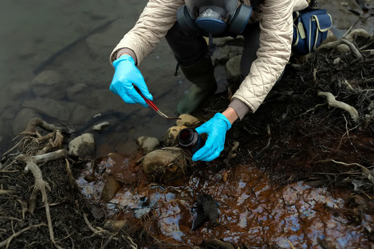

.
Inicio
Problemas ambientales
Visión y Misión
CONTAMINACIÓN
La base de la educación es cuestión de corazón
-Don Bosco

¿Sabías que?
El aire que respiras y la comida que ingieres a diario contiene sustancias tóxicas